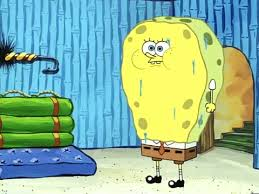
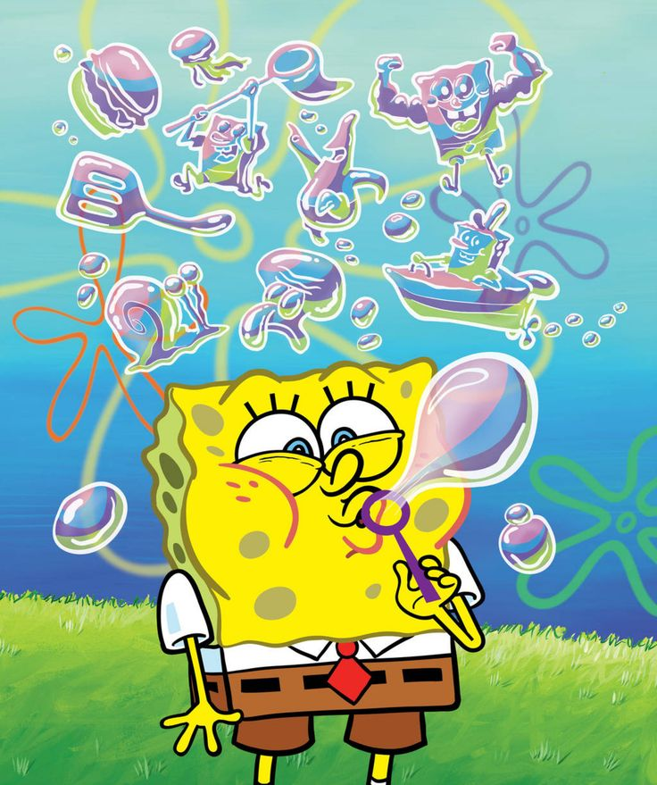
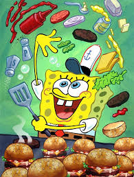
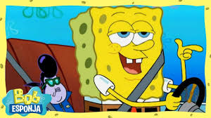
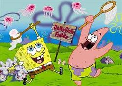
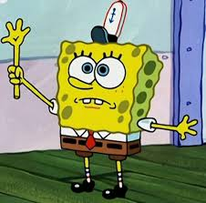
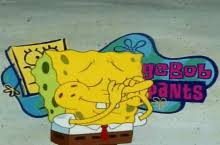
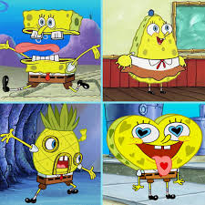
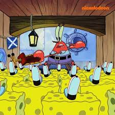

Habilidades:
Absorción: Al ser una esponja, también es absorbente, y puede expandir su cuerpo absorbiendo líquidos. A veces, cuando Bob Esponja llora, reabsorbe sus lágrimas.
Sin huesos: Bob Esponja suele mostrarse sin huesos, ya que las esponjas marinas son invertebrados. Sin embargo, en algunos episodios, como "Tuve un Accidente," se muestran huesos en sus radiografías.
Soplar burbujas: Bob Esponja puede realizar movimientos extraordinarios con burbujas, más notablemente exhibidos en "Pompas de Jabón." Es considerado junto con la pesca de gelatina como su pasatiempo favorito y el de Patricio.
Limpieza: Bob Esponja es capaz de usar su cuerpo como una esponja de cocina para limpiar superficies, generalmente pisos. Esto se ve en episodios como "Enganchado" y "Aplazador".
Destrucción: Bob Esponja tiene un grado de talento en la destrucción, pero la mayoría de los casos muestran que la mayoría de las veces lo realiza de forma involuntaria debido a su personalidad crédula y temeraria, Aunque no lo sabe y gracias a su poca habilidad para conducir, Bob Esponja es hábil en los derbis de demolición.
Creatividad Culinaria:: Ha hecho variaciones de Cangreburger, incluso repugnantes: "La Cangreburger Inmunda", "Cangreburgers Secretas", " Cangreburgers Naturales", "Doble Cangreburger con todo", "Doble Triple en Balsa Decorado", "Pizza de Don Cangrejo", "Cangreburger con Jalea de Medusa"... solo por nombrar algunos.
Conducción (cualquier cosa menos un bote-móvil): Puede conducir perfectamente ciertos objetos, pero sus nervios le superan cuando conduce barcos en la Escuela de Navegación de la Señora Puff.
Pesca de medusas: Bob Esponja y Patricio pescan medusas en los Campos de Medusas en varios episodios. En "Cazador de Medusas," atrapa todas las medusas de los campos.
Extremidades desmontables: Las partes del cuerpo de Bob Esponja, principalmente sus brazos, se muestran desmontables, generalmente como una mordaza.
Regeneración: Se muestra que puede regenerar rápidamente las partes de su cuerpo que se lesionan o se eliminan, ya que esto es natural para las esponjas reales.
Levitación: Bob Esponja puede levitar infinitamente.
Cantar y tocar la nariz: Bob Esponja se muestra como poseedor de una fantástica voz para cantar. Utiliza su nariz como una flauta, en la que tiene mucho talento.
Cambio de partes del cuerpo: Puede cambiar las partes de su cuerpo en objetos, así como cambiar de forma.
Multiplicación de partes del cuerpo: Puede multiplicar las partes de su cuerpo debido a su regeneración.
